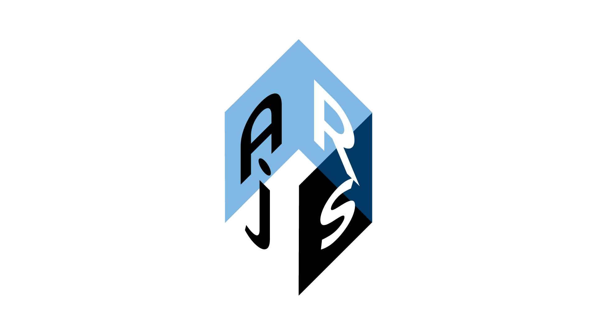

AR.js - Augmented Reality on the Web

AR.js is a lightweight library for Augmented Reality on the Web, coming with features like Image Tracking, Location based AR and Marker tracking.
What Web AR means (Augmented Reality on the Web)
Augmented Reality is the technology that makes possible to add overlayed content on the real world. It can be provided for several type of devices: handleheld (like mobile phones), headsets, desktop displays, and so on.
For handleheld devices (more in general, for video-see-through devices) the 'reality' is captured from one or more cameras and then shown on the device display, adding some kind of content on top of it.

For developers, to develop Augmented Reality ('AR' from now on) on the Web, means to void all the Mobile app developement efforts and costs related to App stores (validation, time to publish). It also means to re-use well known technologies like Javascript, HTML and CSS, known from a lot of developers and possibly designers.
It basically means that is possible to release every new version instantly, fix bugs or release new features in near real-time, opening a lot of pratical possibilities.
For users, it means to reach an AR experience just visiting a website. As QR Codes are now widespread, it's also possible to scan a QR Code and reach the URL without even type. Addictionally, users do not have to reserve storage space on their download the AR app, and do not have to keep it updated.
Why AR.js
We believe in the Web, as a collaborative and accessible environment. We also believe in the Augmented Reality technology, as a new communication medium, that can help people to see the reality in new, exciting ways. We see Augmented Reality (AR) used everyday for a lot of useful applications, from art, to education, also for fun.
We strongly believe that such a powerful technology, that can help people and leverage their creativity, should be free in some way. Also collaborative, if possible. And so, we continue the work started by Jerome Etienne, in bringing AR on the Web, as a free and Open Source technology.
Thank you for being interested in this, if you'd like to collaborate in any way, contact us (https://twitter.com/nicolocarp).
The project is now under a Github organization, that you can find at https://github.com/ar-js-org and you can ask to be part of it, for free.
AR types
AR.js features the following types of Augmented Reality, on the Web:
-
Image Tracking, when a 2D images is found by the camera, it's possible to show some kind of content on top of it, or near it. The content can be a 2D image, a GIF, a 3D model (also animated) and a 2D video too. Cases of use: Augmented Art, learning (Augmented books), Augmented flyers, advertising, etc.
-
Location Based AR, this kind of AR uses real-world places in order to show Augmented Reality content, on the user device. The experiences that can be built with this library are those that uses users position in the real world. The user can move (ideally outdoor) and through their smartphones they can see AR content where places are in the real world. Moving around and rotating the phone will make the AR content change according to users position and rotation (so places are 'sticked' in their real position, and appear bigger/thinner according to their distance from the user). With this solution it’s possible to build experiences like interactive support for touristic guides, support when exploring a new city, find places of interest like buildings, museums, restaurants, hotels and so on. It’s also possible to build learning experiences like treasure hunts and biology or history learning games, or use this technology for situated art (visual art experiences bound to specific real world coordinates).
-
Marker Tracking, When a marker is found by the camera, it's possible to show some content (same as Image Tracking). Markers are very stable but limited in shape, color and size. It is suggested for those experiences where are required a lot of different markers with different content. Examples of use: (Augmented books), Augmented flyers, advertising.
Key points
- Very Fast : It runs efficiently even on phones
- Web-based : It is a pure web solution, so no installation required. Full javascript based on three.js + A-Frame + jsartoolkit5
- Open Source : It is completely open source and free of charge!
- Standards : It works on any phone with webgl and webrtc
AR.js has reached version 3. This is the official repository: https://github.com/AR-js-org/AR.js. If you want to visit the old AR.js repository, here it is: https://github.com/jeromeetienne/AR.js.
Import the library
AR.js from version 3 has a new structure.
AR.js is coming in two, different build. They are both maintained. They are exclusive.
The file you want to import depends on what features you want, and also which render library you want to use (A-Frame or three.js).
AR.js uses jsartoolkit5 for tracking, but can display augmented content with either three.js or A-Frame.
You can import AR.js in one version of your choice, using the <script> tag on your HTML.
AR.js with Image Tracking + Location Based AR
Import AFRAME version:
<script src="https://raw.githack.com/AR-js-org/AR.js/master/aframe/build/aframe-ar-nft.js">
Import three.js version:
<script src="https://raw.githack.com/AR-js-org/AR.js/master/three.js/build/ar-nft.js">
AR.js with Marker Tracking + Location Based AR:
Import AFRAME version:
<script src="https://raw.githack.com/AR-js-org/AR.js/master/aframe/build/aframe-ar.js">
Import three.js version:
<script src="https://raw.githack.com/AR-js-org/AR.js/master/three.js/build/ar.js">
If you want to import a specific version, you can do that easily replacing master with the version tag, e.g.:
<script src="https://raw.githack.com/AR-js-org/AR.js/3.0.0/aframe/build/aframe-ar-nft.js">
Requirements
Some requirements and known restrictions are listed below:
- It works on every phone with webgl and webrtc.
- Marker based is very lightweight, while Image Tracking is more CPU consuming
- You cannot use Chrome on iOS, as Chrome on iOS did not support, at the moment, camera access
- On device with multi-cameras, Chrome may have problems on detecting the right one. Please use Firefox if you find that AR.js opens on the wrong camera. There is an open issue for this.
- To work with Location Based feature, your phone needs to have GPS sensors
- Please, read carefully any suggestions that AR.js pops-up -as alerts- for Location Based on iOS, as iOS requires user actions to activate geoposition
- Location Based feature is only available on A-Frame
Always deploy under https
Accessing to the phone camera or to camera GPS sensors, due to major browsers restrictions, can be done only under https websites.
All the examples you will see, and all AR.js web apps in general, have to be run on a server. You can use local server or deploy the static web app on the web.
So don't forget to always run your examples on secure connections servers or localhost. Github Pages is a great way to have free and live websites under https.
Getting started
Here we present three, basic examples, one for each AR feature. For specific documentation, on the top menu you can find every section, or you can click on the following links:
Image Tracking Example
There is a Codepen for you to try. Below you can find also a live example.
Please follow these simple steps:
- Create a new project with the code below (or open this live example and go directly to the last step)
- Run it on a server
- Open the website on your phone
- Scan this picture to see content through the camera.
{kind=link}
<script src="https://cdn.jsdelivr.net/gh/aframevr/aframe@1c2407b26c61958baa93967b5412487cd94b290b/dist/aframe-master.min.js"></script>
<script src="https://raw.githack.com/AR-js-org/AR.js/master/aframe/build/aframe-ar-nft.js"></script>
<style>
.arjs-loader {
height: 100%;
width: 100%;
position: absolute;
top: 0;
left: 0;
background-color: rgba(0, 0, 0, 0.8);
z-index: 9999;
display: flex;
justify-content: center;
align-items: center;
}
.arjs-loader div {
text-align: center;
font-size: 1.25em;
color: white;
}
</style>
<body style="margin : 0px; overflow: hidden;">
<!-- minimal loader shown until image descriptors are loaded -->
<div class="arjs-loader">
<div>Loading, please wait...</div>
</div>
<a-scene
vr-mode-ui="enabled: false;"
renderer="logarithmicDepthBuffer: true;"
embedded
arjs="trackingMethod: best; sourceType: webcam;debugUIEnabled: false;"
>
<!-- we use cors proxy to avoid cross-origin problems -->
<a-nft
type="nft"
url="https://arjs-cors-proxy.herokuapp.com/https://raw.githack.com/AR-js-org/AR.js/master/aframe/examples/image-tracking/nft/trex/trex-image/trex"
smooth="true"
smoothCount="10"
smoothTolerance=".01"
smoothThreshold="5"
>
<a-entity
gltf-model="https://arjs-cors-proxy.herokuapp.com/https://raw.githack.com/AR-js-org/AR.js/master/aframe/examples/image-tracking/nft/trex/scene.gltf"
scale="5 5 5"
position="50 150 0"
>
</a-entity>
</a-nft>
<a-entity camera></a-entity>
</a-scene>
</body>
Location Based Example
Try it live with this Codepen. It retrieves your position and places a text near you.
Please follow these simple steps:
- Create a new project with the following snippet, and change
add-your-latitudeandadd-your-longitudewith your latitude and longitude, without the<>. - Run it on a server
- Activate GPS on your phone and navigate to the example URL
- Look around. You should see the text looking at you, appearing in the requested position, even if you look around and move the phone.
<!DOCTYPE html>
<html>
<head>
<meta charset="utf-8" />
<meta http-equiv="X-UA-Compatible" content="IE=edge" />
<title>GeoAR.js demo</title>
<script src="https://aframe.io/releases/1.0.4/aframe.min.js"></script>
<script src="https://unpkg.com/aframe-look-at-component@0.8.0/dist/aframe-look-at-component.min.js"></script>
<script src="https://raw.githack.com/AR-js-org/AR.js/master/aframe/build/aframe-ar-nft.js"></script>
</head>
<body style="margin: 0; overflow: hidden;">
<a-scene
vr-mode-ui="enabled: false"
embedded
arjs="sourceType: webcam; debugUIEnabled: false;"
>
<a-text
value="This content will always face you."
look-at="[gps-camera]"
scale="120 120 120"
gps-entity-place="latitude: <add-your-latitude>; longitude: <add-your-longitude>;"
></a-text>
<a-camera gps-camera rotation-reader> </a-camera>
</a-scene>
</body>
</html>
Marker Based Example
Please follow these simple steps:
- Create a new project with the code below (or open this live example and go directly to the last step)
- Run it on a server
- Open the website on your phone
- Scan this picture to see content through the camera.
{kind=link}
<!DOCTYPE html>
<html>
<script src="https://aframe.io/releases/1.0.4/aframe.min.js"></script>
<!-- we import arjs version without NFT but with marker + location based support -->
<script src="https://raw.githack.com/AR-js-org/AR.js/master/aframe/build/aframe-ar.js"></script>
<body style="margin : 0px; overflow: hidden;">
<a-scene embedded arjs>
<a-marker preset="hiro">
<a-entity
position="0 0 0"
scale="0.05 0.05 0.05"
gltf-model="https://arjs-cors-proxy.herokuapp.com/https://raw.githack.com/AR-js-org/AR.js/master/aframe/examples/image-tracking/nft/trex/scene.gltf"
></a-entity>
</a-marker>
<a-entity camera></a-entity>
</a-scene>
</body>
</html>
Advanced stuff
AR.js offers two ways, with A-Frame, to interact with the web page: to interact directly with AR content and Overlayed DOM interaction.
Also, there are several Custom Events triggered during the life cycle of every AR.js web app.
You can learn more about these aspects on the UI and Events section.
AR.js architecture
AR.js uses jsartoolkit5 for tracking, but can display augmented content with either three.js or A-Frame.
three.js folder contains
- source code for AR.js core, Marker based and Image Tracking
- examples for AR.js three.js based
- build for three.js AR.js based
- vendor stuff (jsartoolkit5)
- workers (used for Image Tracking).
When you find files that ends with -nft suffix, they're boundled only with the Image Tracking version.
A-Frame version of AR.js uses three.js parts as its core. A-Frame code, on AR.js, is simply a wrapper to write AR with Custom Components in HTML.
aframe folder contains
- source code for AR.js A-Frame (aka wrappers for Marker Based, Image Tracking components)
- source code for Location Based
- build for A-Frame AR.js based
- examples for A-Frame AR.js.
Troubleshooting, feature requests, community
You can find a lot of help on the old AR.js repositories issues. Please search on open/closed issues, you may find a interesting stuff.
Contributing
From opening a bug report to creating a pull request: every contribution is appreciated and welcome. If you're planning to implement a new feature or change the api please create an issue first. This way we can ensure that your precious work is not in vain.
Issues
If you are having configuration or setup problems, please post a question to StackOverflow. You can also address question to us in our Gitter chatroom
If you have discovered a bug or have a feature suggestion, feel free to create an issue on Github.
Submitting Changes
After getting some feedback, push to your fork and submit a pull request. We may suggest some changes or improvements or alternatives, but for small changes your pull request should be accepted quickly.
Some things that will increase the chance that your pull request is accepted:
- Follow the existing coding style
- Write a good commit message